AT&T Stadium
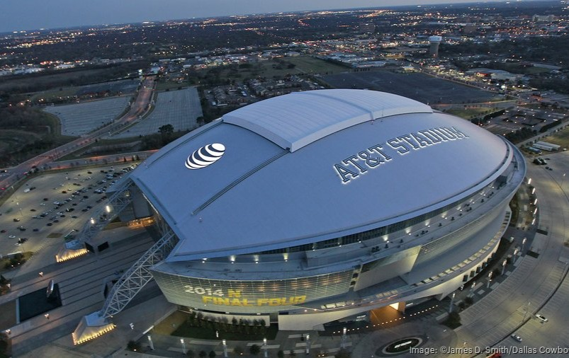
Category: Indoor/Dome
Description: Home of the Dallas Cowboys, stadium located in Arlington, Texas.
Seating Capaity: ~100,000
NFL Stadiums

Category: Indoor/Dome
Description: Home of the Dallas Cowboys, stadium located in Arlington, Texas.
Seating Capaity: ~100,000
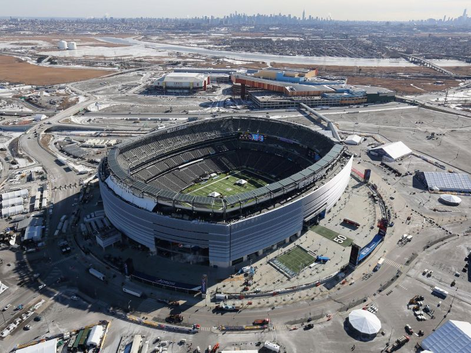
Category: Outdoor/Open
Description: Shared home of the New York Giants and New York Jets, located in East Rutherford, New Jersey.
Seating Capacity: ~82,000
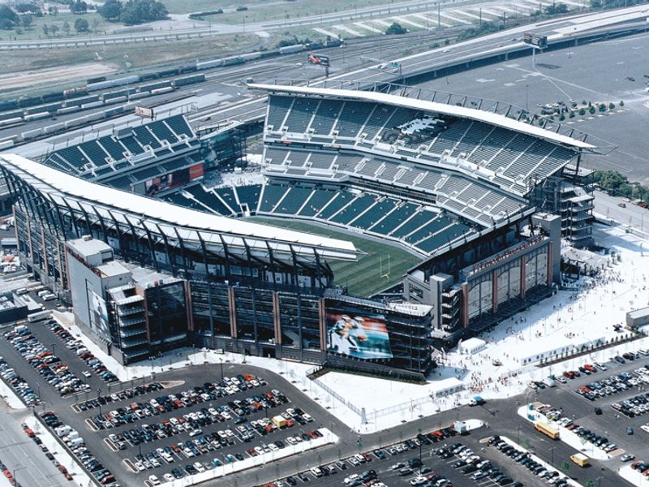
Category: Outdoor/Open
Description: Home of the Philadelphia Eagles, stadium located in Philadelphia, Pennsylvania.
Seating Capacity: ~69,000
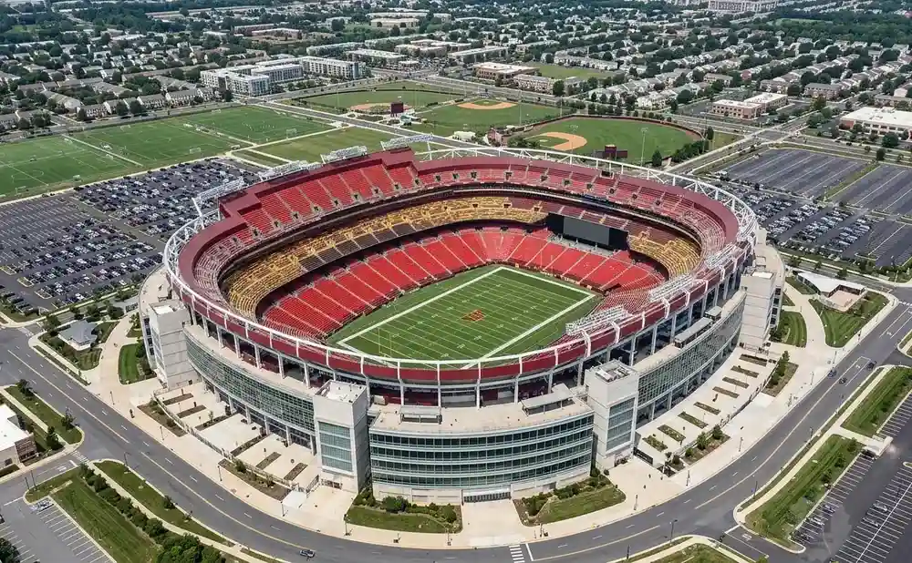
Category: Outdoor/Open
Description: Home of the Washington Commanders, stadium located in Landover, Maryland.
Seating Capacity: ~64,000
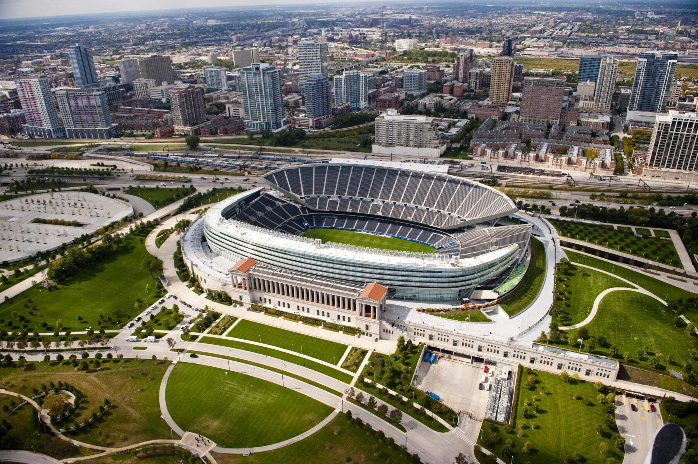
Category: Outdoor/Open
Description: Home of the Chicago Bears, stadium located in Chicago, Illinois.
Seating Capacity: ~61,500
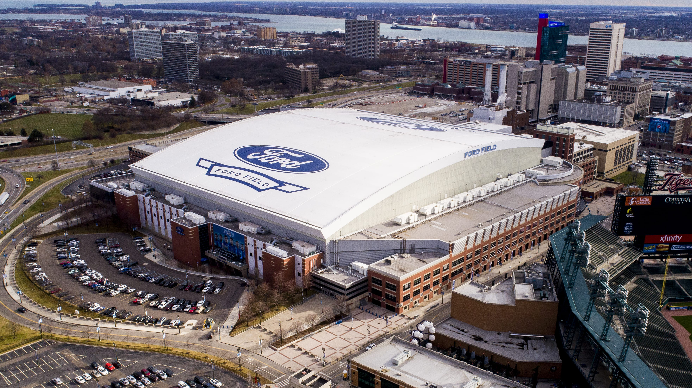
Category: Indoor/Dome
Description: Home of the Detroit Lions, stadium located in Detroit, Michigan.
Seating Capacity: ~65,000
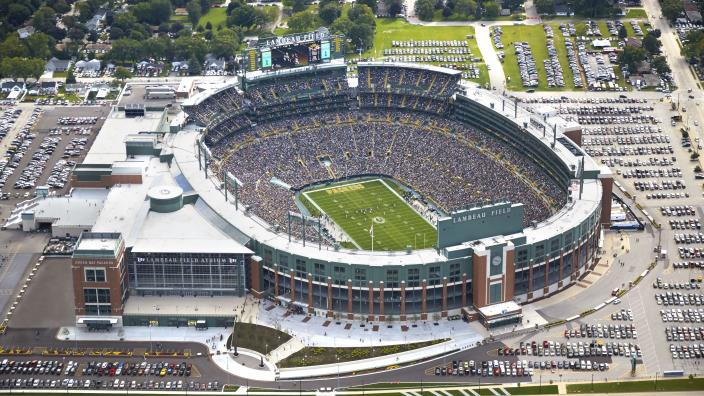
Category: Outdoor/Open
Description: Home of the Green Bay Packers, stadium located in Green Bay, Wisconsin.
Seating Capacity: ~81,440
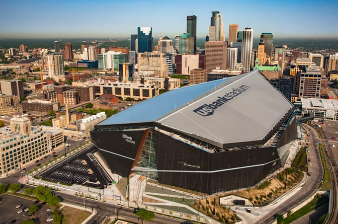
Category: Indoor/Fixed Roof
Description: Home of the Minnesota Vikings, stadium located in Minneapolis, Minnesota.
Seating Capacity: ~66,860
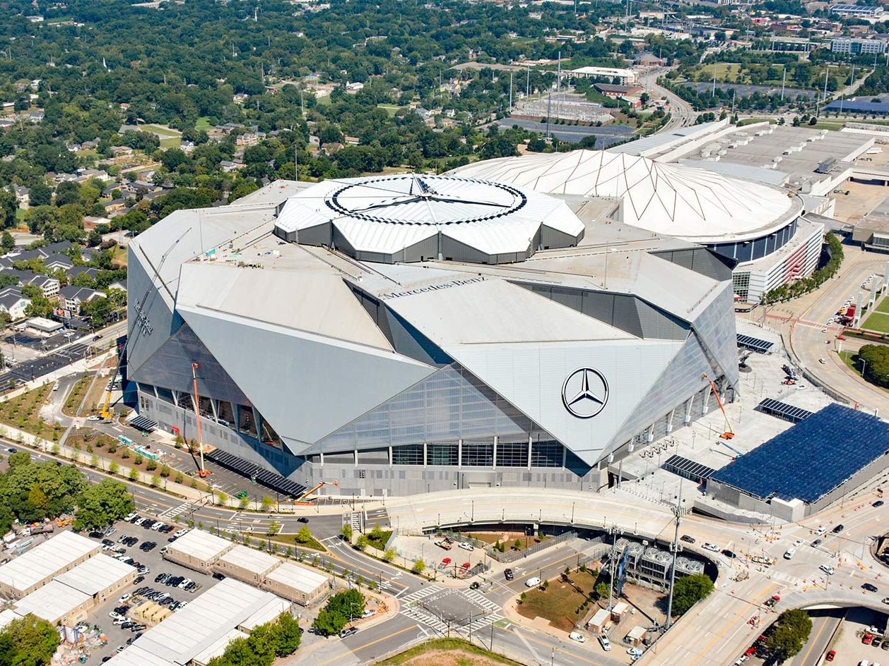
Category: Retractable Roof
Description: Home of the Atlanta Falcons, stadium located in Atlanta, Georgia.
Seating Capacity: ~71,000
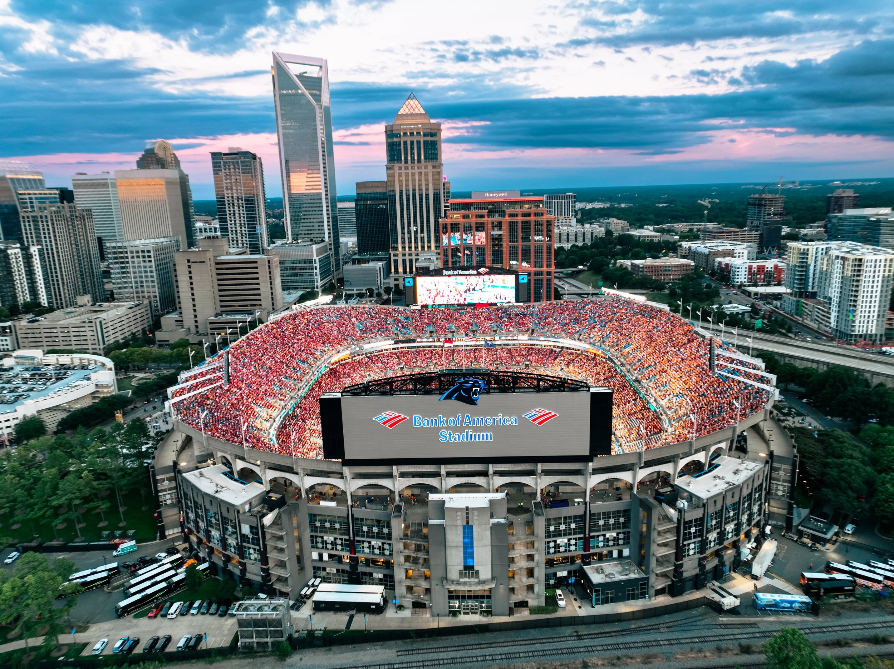
Category: Outdoor/Open
Description: Home of the Carolina Panthers, stadium located in Charlotte, North Carolina.
Seating Capacity: ~74,867
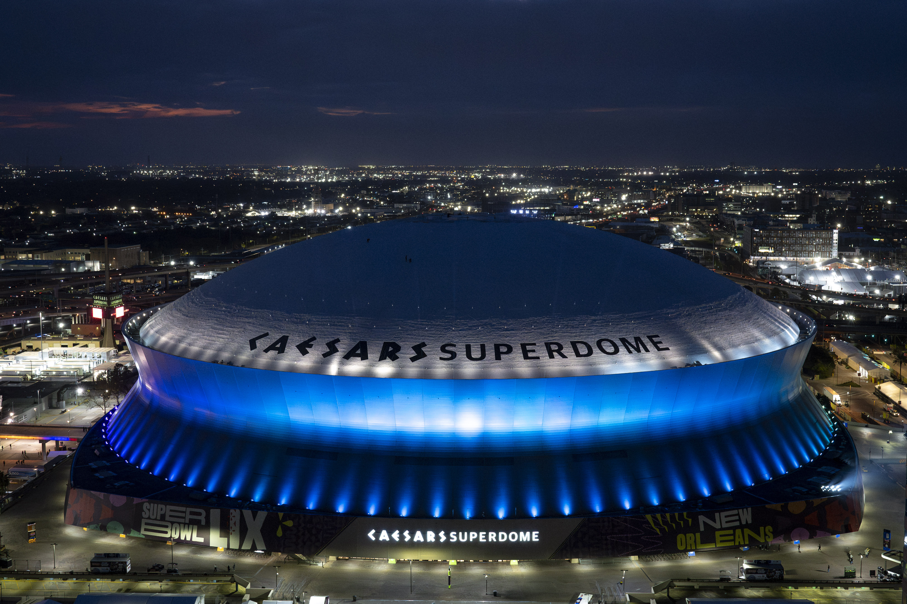
Category: Indoor/Dome
Description: Home of the New Orleans Saints, stadium located in New Orleans, Louisiana.
Seating Capacity: ~73,000
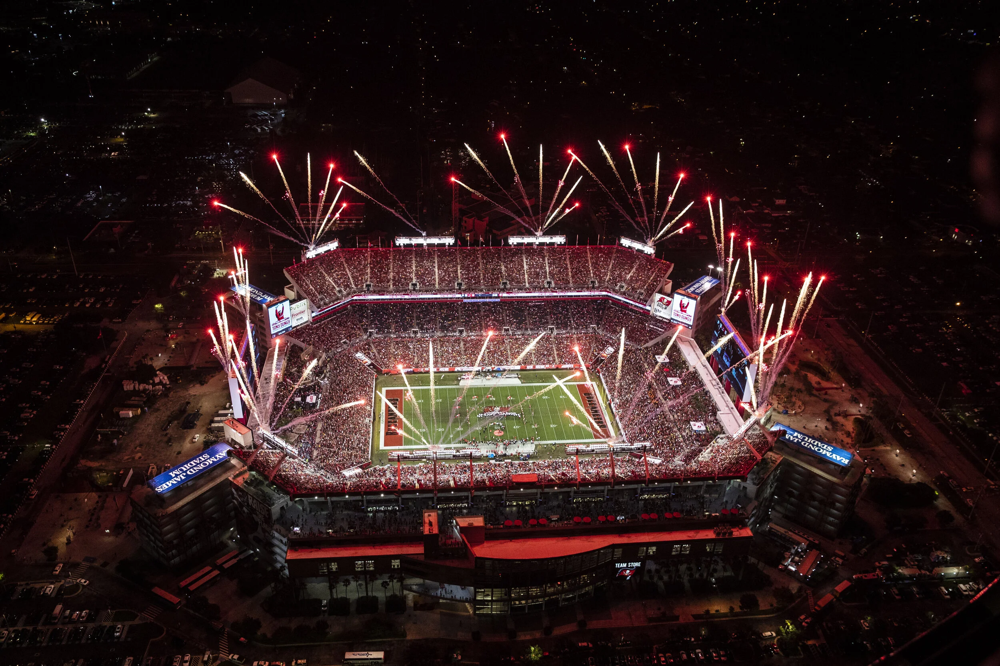
Category: Outdoor/Open
Description: Home of the Tampa Bay Buccaneers, stadium located in Tampa, Florida.
Seating Capacity: ~65,890

Category: Retractable Roof
Description: Home of the Arizona Cardinals, stadium located in Glendale, Arizona.
Seating Capacity: ~63,400
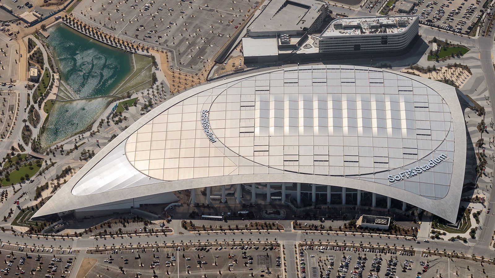
Category: Indoor/Canopy
Description: Shared home of the Los Angeles Rams and Los Angeles Chargers, located in Inglewood, California.
Seating Capacity: ~70,240
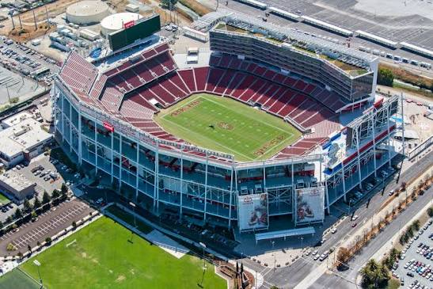
Category: Outdoor/Open
Description: Home of the San Francisco 49ers, stadium located in Santa Clara, California.
Seating Capacity: ~68,500
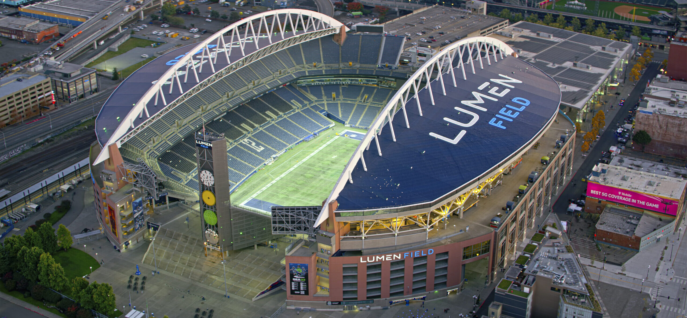
Category: Outdoor/Open
Description: Home of the Seattle Seahawks, stadium located in Seattle, Washington.
Seating Capacity: ~68,740